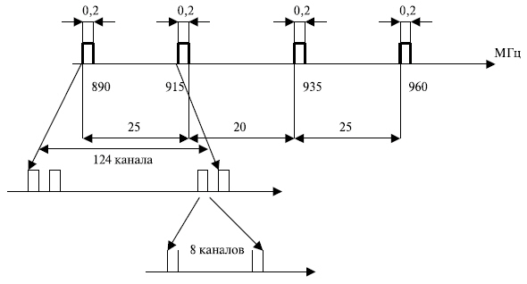
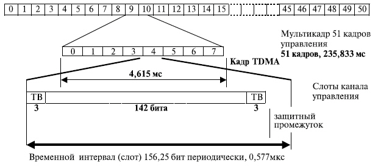
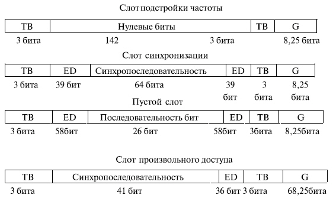
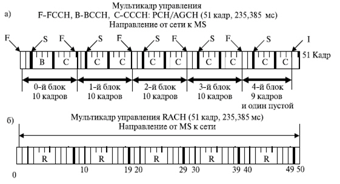
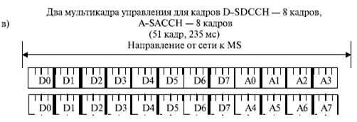
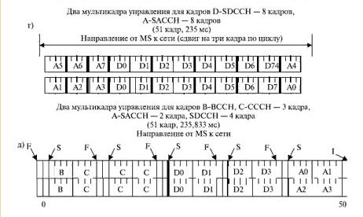
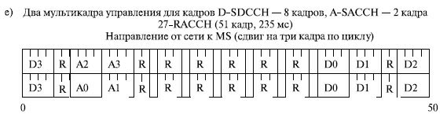
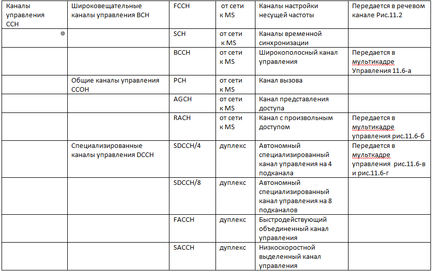

Частотный план в стандарте GSM. Принцип образования каналов в системе GSM [1,6], показан на рис.3.12.
Для радиодоступа GSM 900 выделены две полосы частот:
890–915 МГц для канала связи от абонента к станции (направление MS к BS);
935–960 МГц для исходящего канала от станции к абоненту (направления BS к MS).

Рис.3.12. Образование каналов в системе GSM
Полосы по 25 МГц разделены на 124 пары каналов, работающих в дуплексном режиме с интервалом несущей частоты по 200 кГц, используя многостанционный доступ с частотным разделением каналов (FDMA — Frequency Division Multiple Access). Каждый радиоканал с шириной полосы 200 кГц разделен на временные соты, которые создают 8 логических каналов. При этом используется методика, известная как многостанционный доступ с временным разделением (TDMA — Time Division Multiple ACCESS). Напомним: многостанционный доступзаключается в том, что группа пользователей имеет возможность использовать одну несущую частоту в разные моменты времени. Принцип доступа к этим каналам и разрешение ситуаций конкуренции за ресурс — различный.
Канал, переносящий информацию (канал трафика, или логический канал), определится номером несущей частоты и номером одного из 8 временных положений. Информация переносится в виде коротких пакетов (burst), объединенных в кадры.
Многостанционный доступ с временным разделением (TDMA), содержащий 8 слотов и 248 физических полудуплексных каналов, составляет группу из 1984 полудуплексных каналов. При размере кластера 7 число каналов в одной соте равно примерно 283 (1984 /7) полудуплексных каналов. Как было показано ранее, разбиение, содержащее семь наборов частот, достаточно, чтобы охватить произвольно большую область, используя повторное применение частот с учетом допустимого расстояния между сотами.
Структура кадров и кадров управления в стандарте GSM. Структура кадров трафика. Каналы трафика (TCH) используются для доставки данных и речи. Структура образования кадров трафика (TCH) показана на рис.3.13 [1,6].
Мультикадр трафика содержит 26 кадров временного доступа (TDMA), каждый из которых состоит из 8 пакетов ( burst) трафика. Длительность мультикадра трафика — 120 мс. Поэтому длительность кадров временного доступа 120 мс / 26 = 4,615 мс, а длительность временного положения (слота) трафика равна 120/(26 x 8)=15/26=0,577 мкс. Из 26 кадров 24 используются для трафика, один (12-й кадр) — как низкоскоростной выделенный канал управления (SACCH — Slow Associated Control Channel) и один (25-й) в настоящее время не используется.
Рис.3.13. Структура кадров трафика радио доступа системы GSM
Пакет содержит:
два поля данных по 57 бит, т. е. в одном пакете содержится объем информации 114 бит;
поле обучающей последовательности. Эта последовательность используется для оценки характеристик радиоканала. Она представляет собой набор заранее заданных знаков, по искажению которых определяют качество радиоканала;
"хвостовые биты" (tail bits), располагающиеся по краям одного блока и указывающие его границы. Они защищают информацию при сдвиге слота;
однобитовые поля — представляют собой флажки, которые указывают тип информации.
Пакет может использоваться как для передачи трафика, так и для передачи кадров управления. TCH прямого и обратного направления разделены во времени на 3 периода передачи пакета. Поэтому мобильная станция не может одновременно получать и принимать один и тот же канал, что упрощает ее электронное устройство.
Данные передаются в пакетах, которые помещены в слоты. Общее число бит в мультикадре трафика равно 156,25 бит x 8 x 26 = 32500 бит. Эти биты передаются за 120 мсек. Поэтому скорость передачи информации в битах — 270,833 Кбит/с (32500/0,12=270,833 Кбит/с). Время передачи одного бита 3,69 мкс. Чтобы нейтрализовать влияние ошибок в настройке времени, дисперсию времени и т. д., пакет данных немного короче, чем временной интервал. Он составляет для одного пакета 148 бит из 156.25 битов, передаваемых в пределах слота.
В дополнение к каналам THC's с полной скоростью могут применяться каналы THC's с полускоростью. THC's с полускоростью фактически могут удвоить емкость системы, так как в них предусматривается кодирование речи в пределах 11,4 Кбит/с вместо 22,8 Кбит/с. Полускоростные THC's каналы также используются для передачи сигналов управления. В рекомендациях они названы автономными специализированными каналами управления (SDCCH — Stand-alone Dedicated Control Channels) [9-12].
Если применяется полускоростное кодирование, то число слотов увеличивается до 16. При этом в четных кадрах мультикадра содержится информация 0–7-го слота, а в нечетных — 8–15-го.
Структура кадров управления. Структура кадров управления и мультикадров показана на рис.3.14. По сравнению с приведенными на рис. 3.13 кадрами, мультикадр состоит из 51 кадра TDMA, каждый из которых содержит 8 слотов.


Рис.3.14. Структура кадров управления
Содержания слотов управления и защитный интервал зависят от их назначения и указаны на рис.3.15.

Рис.3.15. Структуры слотов управления
Слот подстройки частоты (FB — Frequency correction Burst) предназначен для синхронизации частот мобильной станции. Для передачи этих слотов выделяется канал подстройки частоты (FCCH — Frequency Correction Channel).
Слот синхронизации (SB — Synchronization Burst) предназначен для синхронизации по времени базовой и мобильной станций. Слот содержит синхропоследовательность (64 бита), зашифрованную информацию о номере кадра TDMA и коде идентификации базовой станции два блока (по 39 бит каждый). Для передачи этих слотов выделяется отдельный канал синхронизации (SCH — Synchronizing Channel).
Пустой слот (DB — Dummy Burst) — этот вспомогательный пакет содержит два поля по 58 бит, не несущих информации. Такой пакет передается с целью оповещения о том, что станция находится в работоспособном состоянии.
Слот доступа (AB — Access Burst) предназначен для разрешения доступа MS к BSS, передается по каналу права доступа (RACH — Random Access Channel). Этот слот передается в качестве первого запроса, когда станции еще не вошли в синхронный режим и неизвестно время прохождения сигнала. Он содержит концевую комбинацию (TB) — в данном случае она состоит из 3 бит; последовательность синхронизации для базовой станции — 41 бит, что позволяет базовой станции начать процесс синхронизации и обеспечить правильный прием последующих 36 бит. Большой защитный интервал (68,25 бит длительностью 252 мкс) обеспечивает максимальное время для защиты кадров от эффекта межсимвольного искажения.
Все слоты имеют одинаковую длину 156,25 бит и длительность 235,833 мкс. Все слоты, кроме слота доступа, имеют концевые биты (TB — Tail Bit) по 3 бита каждый, и защитный интервал 8,25 бит.
На рис.3.16показано объединение информации управления и трафика в единый поток.
Рис.3.16. Объединение мультикадров трафика и управления в единый поток
Организация физических каналов. Для передачи быстродействующего объединенного канала управления (FACCH — Fast Associated Control Channel) и низкоскоростного выделенного канала управления (SACCH —Slow Associated Control Channel) применяются каналы трафика. Как уже было показано на 3.13, пакет трафика может использоваться и для передачи трафика, и для передачи кадров управления. Для этого применяются однобитовые флажки, которые указывают тип информации?
Из 26 кадров 24 используются для трафика, один (12-й кадр) — как низкоскоростной выделенный канал управления (SACCH — Slow Associated Control Channel). Один (25-й) в настоящее время не задействован, но при полускоростном режиме он может использоваться для организации второго канала SACCH. Для передачи в 12-м кадре может работать 8 слотов.
Поскольку один канал SACCH при полноскоростном режиме занимает один слот с информационным полем 114 бит (см.3.13), а время передачи 0,12 с, то скорость передачи по этому каналу 114/0,12=950 бит/с.
Слоты канала FACCH передаются со скоростью слота трафика. Остальные каналы управления передаются в мультикадре управления (рис.3.14), содержащем 51 кадр. Организация каналов [16] управления в таком мультикадре показана на рис.3.17.




Рис.3.17. Организация мультикадра управления
Каналы BCCH/CCCH могут использоваться всеми абонентами, находящимися в данной соте.
При передаче в направлении от сети к MS весь мультикадр разбивается на 5 групп по 10 кадров в каждой. Каждая группа начинается кадром канала FCCH, за которым следует SCH. Остальные 8 кадров разделяются на два блока по 4 кадра. Первая группа перового блока предназначена для передачи канала BCCH. Второй блок этой группы и остальные 8 блоков (всего 9 блоков), принадлежащие другим группам, предназначены для передачи кадров класса общего каналов управления — CCCH, а именно, входящих в него PCH и AGCH. Эти блоки называются блоками передачи каналов вызова. Таким образом, в рассматриваемом случае используются 4 кадра для передачи BCCH, 5 кадров для передачи FCCH, 5 кадров для SCH и 36 кадров (9 блоков вызова) для AGCH либо PCH.
Линия от MS к сети используется только для передачи кадров канала RACH.
В табл.3.10 сведены итоговые сведения по организации логических каналов.
Табл.3.10
О
рганизация
каналов управления
Примечание. Форматы, приведенные на рис.3.10д и рис.3.10е, применяются в случае небольшой загрузки каналов управления и не указаны в таблице.